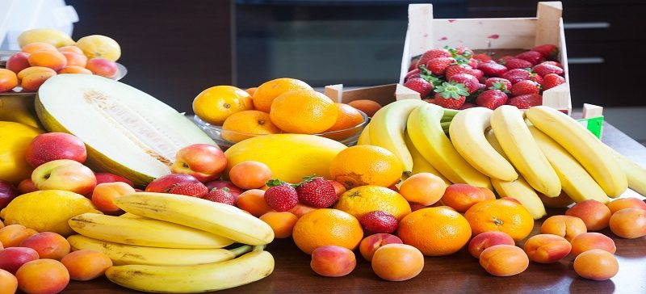

果蔬成熟度智能检测系统
核心项目 · P1基于 YOLOv8 + ResNet50 的果蔬检测与成熟度分类桌面系统。自建 8000+ 张标注数据集，支持图片、视频、摄像头、批量目录四种推理模式，检测结果实时呈现于可视化表格，并可导出标注后的检测视频。
- 双模型架构：YOLOv8 目标检测定位果实区域 + ResNet50 成熟度分类，综合识别准确率 93%。
- 工程化桌面端：PyQt5 + OpenCV 构建 GUI，QThread 后台线程执行推理避免界面卡顿，GPU / CPU 环境自适应。
- 结果可视化与交互：检测框绘制、目标下拉筛选、置信度 / IOU 阈值实时调节、检测视频后台导出与进度反馈。
难点与解决方案
光照干扰 →果园实拍图存在过曝、阴影视差，单一归一化泛化差。前置自适应预处理流水线：白平衡校正 + CLAHE 限制对比度直方图均衡 + 通道归一化，统一不同光照下果实表观特征，降低误检。
小目标漏检 →果实密集场景下小果（远处 / 遮挡）易漏检。基于 k-means 对标注框聚类重设计锚框（anchor）适配果实尺度分布，提升输入分辨率并增加小目标检测层；配合 NMS 阈值调优抑制重叠误框，小目标召回率明显改善。
成效 →预处理 + 锚框优化将综合识别准确率提升至 93%，误检率下降，密集果实场景鲁棒性增强。
本地项目 · 未开源
课程设计项目，涉及本地环境依赖暂未开源